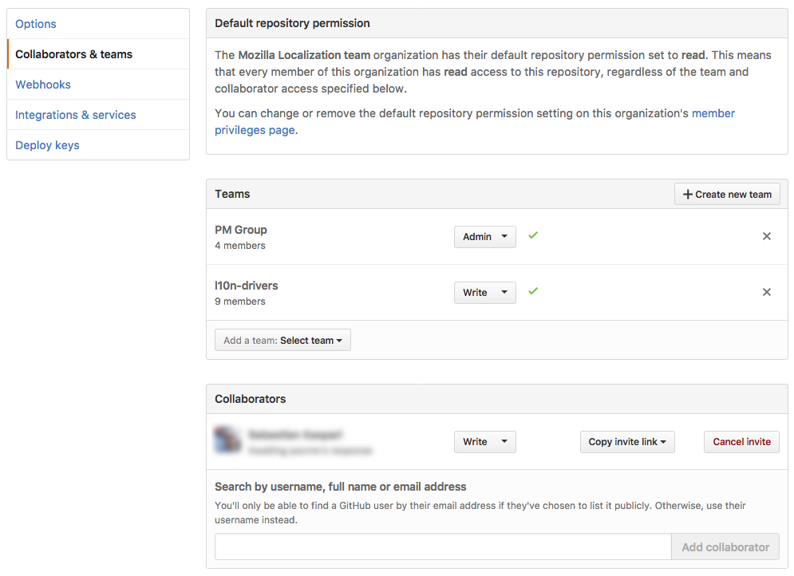

Creating a new repository for projects
Creating a new repository in the mozilla-l10n organization provides the advantage of letting l10n-drivers manage this repository directly, reducing delays when dealing with permissions. It also allows localizers to work directly on GitHub with pull requests.
Note that you need to be a manager of the organization in order to create a new repository.
Create the new repository
A new repository can be created in this page, or using the New button in the organization’s landing page.
Name: always include the -l10n suffix for localization repositories, to differentiate them from other repositories used for tools. Notable exception to this rule is www.mozilla.org.
For example, if the project is Focus for Android, a good repository name is focus-android-l10n.
Description: add a short description, e.g. Strings for the Focus (Android) project.
Set the project as Public and don’t initialize it with a README.

Add collaborators
Go into the project settings, panel Collaborators & teams:
- Add the relevant l10n-drivers as Admin. You can either pick individuals or one of the pre-existing groups.
- Only when the project is ready for localization, add the Localizers group with Write permissions. Note that Pontoon’s bot is included in the localizers group, so you will need to enable it for testing the sync process.
- Add relevant developers as contributors if they need to make commits to the repository (that’s usually the case, in order to update strings).

Add a README.md to the project
Add a README with some useful information about the project. For example, for Focus for Android:
# Focus by Firefox localization
Localization for the Focus by Firefox project for Android.
The application code with build instructions can be found
at <https://github.com/mozilla-mobile/focus-android>.
# License
Translations in this repository are available under the
terms of the [Mozilla Public License v2.0](https://www.mozilla.org/MPL/2.0/).
Add a CODEOWNERS file
It’s possible to add a CODEOWNERS file to automatically ping the owner of the project in case of pull requests. File should be placed in the root of the repository, it’s called CODEOWNERS and uses the following format:
path/to/files/to/monitor @nickname_of_owner
For example, this is the content of the CODEOWNERS file for Focus for Android:
locales/templates/*.pot @delphine
Pull requests to update strings always modify locales/templates/app.pot, while delphine is the nickname of the PM in charge of this product. Any pull request trying to modify files matching that path will automatically send a review request to the code owner.
Add topics to the repository (optional)
In the main repository page you can add topics to make the repository more discoverable by potential contributors. For example, all localization projects have the following topics: mozilla-l10n, localization, translation.